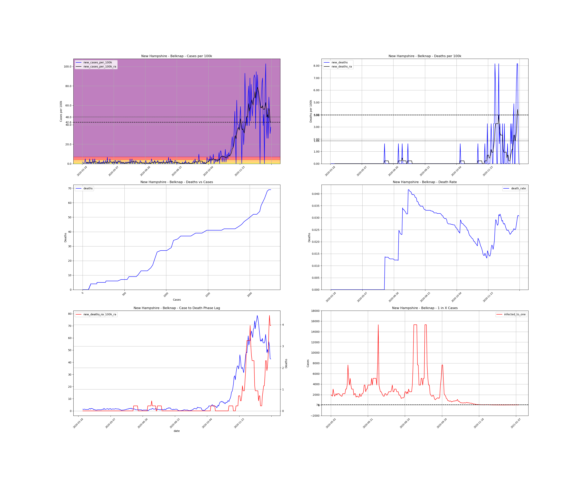
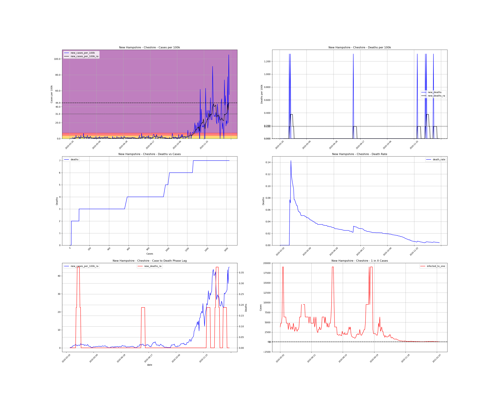
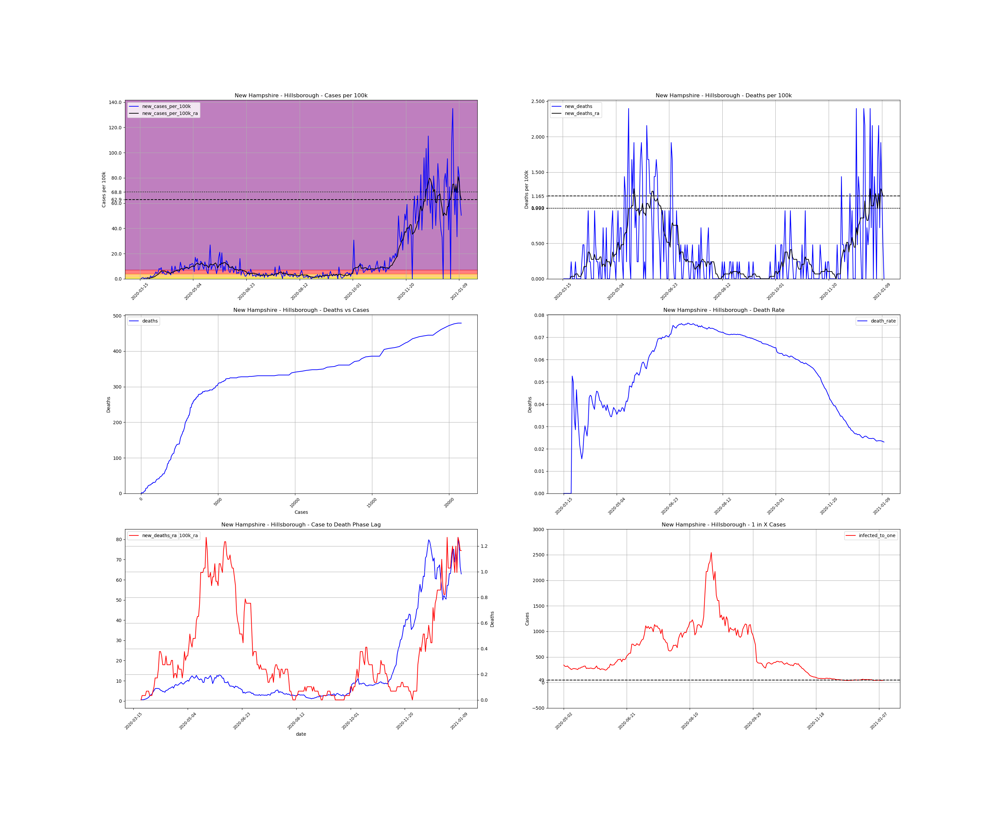
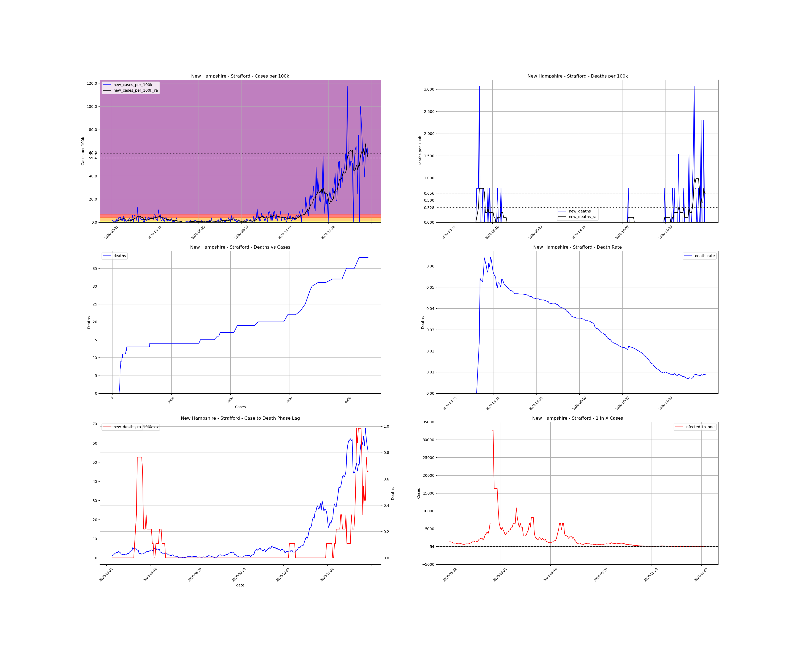

<h1>New Hampshire Counties</h1><table><tr><td><a #Belknap>Belknap</a></td></tr><tr><td><a #Carroll>Carroll</a></td></tr><tr><td><a #Cheshire>Cheshire</a></td></tr><tr><td><a #Coos>Coos</a></td></tr><tr><td><a #Grafton>Grafton</a></td></tr><tr><td><a #Hillsborough>Hillsborough</a></td></tr><tr><td><a #Merrimack>Merrimack</a></td></tr><tr><td><a #Rockingham>Rockingham</a></td></tr><tr><td><a #Strafford>Strafford</a></td></tr><tr><td><a #Sullivan>Sullivan</a></td></tr></table>